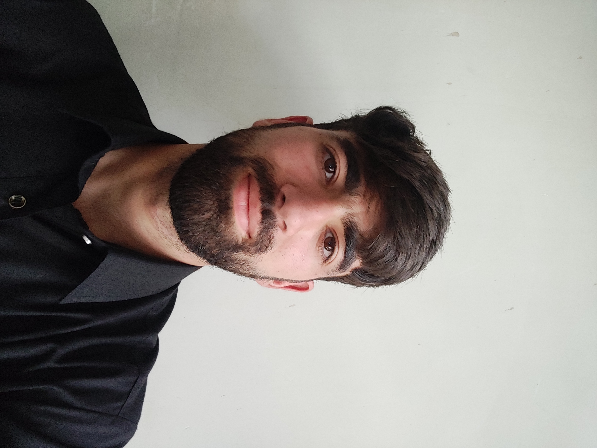

I build and ship end-to-end AI systems — from RAG-powered assistants to satellite change detection — and put them into production with LangGraph, PyTorch, and FastAPI.
I'm a Computer Science graduate working as an AI / ML engineer, covering the full lifecycle — building LLM-powered systems, training deep learning models, and deploying them as real services.
I work hands-on with the modern LLM stack — LangGraph, RAG, FAISS, and Hugging Face — building agentic systems and retrieval assistants. Alongside that, at Sabudh Foundation I built a UCDNet change-detection pipeline for multi-band Sentinel-2 imagery.
I care about the part most demos skip: getting a model out of the notebook and into production.
A RAG-based Q&A chatbot answering natural-language questions over uploaded company documents, grounded in source text with persistent multi-session history.
A deployed app for automated change detection in bi-temporal Sentinel-2 imagery using a UCDNet Siamese encoder-decoder, served live with 53 pre-loaded patches.
An edge-AI bird detection system running on Raspberry Pi with OpenCV, performing real-time detection on constrained hardware.
Open to AI Engineer and ML Engineer roles. The fastest way to reach me is email.